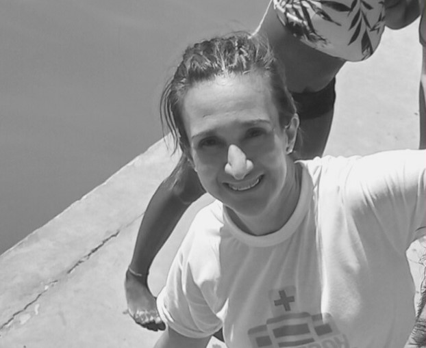
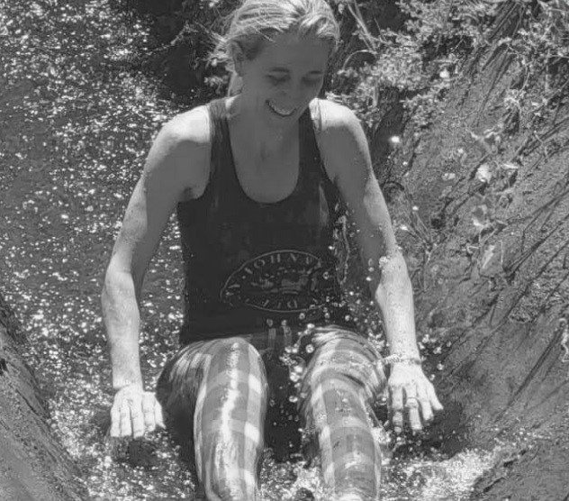
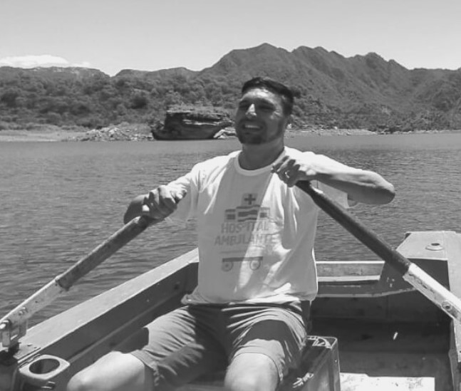

EL EQUIPO
- Dra. Romina Madrid 
- Pediatría MEDEVAC
- Med del desastre y catástrofe
- Dra. Beatriz Costantino 
- Médica general
- Salud de la mujer
- Dr. Rodrigo López 
- Pediatría
- MEDEVAC
- Javier Piñero
- Paramédico
- Capacitación
- Logística
- Rodrigo Suárez
- Logística
- Capacitación
- RRPP
- Ana Belén Nievas
- Logística
- Vocera
- RRPP